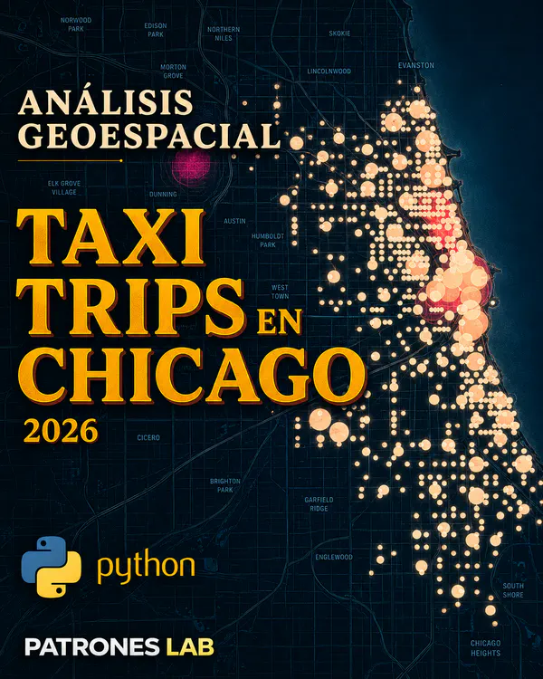

1
 Power BIQlik Bulutu
Power BIQlik Bulutu Looker Studio
Looker Studio SQL Sunucusu
SQL Sunucusu
Keşif
Bağlam ve amaçSorunun, iyileştirilmesi gereken kararın, ilgili kullanıcıların ve beklenen sonucun anlaşılması.
Veri analitiği
Patrones Lab, günlük yaşamdan gerçek olguları inceleyen bir veri analizi laboratuvarıdır.
Burada, kamuya açık verilerle bağımsız projeler geliştirilir; örüntüler tespit edilir, davranışlar incelenir ve bulgular bağlamlarıyla birlikte aktarılır.
Amaç, sorular sormak, verileri hazırlamak, anlaşılır analizler yapmak ve sonuçları görselleştirmektir.

Ben Malcolm Di Pietro Cagliari, aktüer ve Veri ve Analitik uzmanıyım. Kariyerim İş Zekası, kurumsal raporlama, veri modelleme ve tahmin analitiği ile bankacılık, sigorta ve hava taşımacılığı gibi sektörlerdeki deneyimi birleştiriyor.
İş ihtiyaçlarını veri tabanlı çözümlerle bağlama konusunda uzmanım: KPI'ları tanımlama, bilgileri yapılandırma, kontrol panelleri oluşturma ve neler olup bittiğini daha iyi anlamamıza ve daha geniş bağlamla kararlar almamıza yardımcı olan modeller geliştirme.
Sorunun, iyileştirilmesi gereken kararın, ilgili kullanıcıların ve beklenen sonucun anlaşılması.
Mevcut kaynakların belirlenmesi, bunların kökeni, güncellenmesi, güvenilirliği ve ana sınırlamaları.
Tutarlı ve kullanılabilir bir veri temeli oluşturmak için verilerin düzenlenmesi, temizlenmesi ve birleştirilmesi.
Tanımlanan hedefe göre gerekli analiz, model veya gösterge tablosunun geliştirilmesi.
Tutarlılığın, istikrarın ve sonuçların iş gerçekliğiyle uyumunun gözden geçirilmesi.
Nihai çalışmanın belgelenmesi, yinelenen süreçlerin otomasyonu ve gelecekteki iyileştirmeler için geri bildirimlerin değerlendirilmesi.
Kamuya açık verilerle hazırlanan, metodolojisi ve görsel sonuçları sunulan uygulamalı projeler. Alan, araç veya çıktı türüne göre incelemek için filtreleri kullanın.

AENA'dan alınan kamuya açık verilerle İspanya'daki hava trafiğinin analizi; hacimlere, havaalanına göre modellere ve kategoriler arasındaki farklara odaklanıyor.

Fiyatları, konaklama türlerini, müsaitlik durumunu, minimum konaklama sayısını ve mahalleler arasındaki farklılıkları karşılaştırmak için Londra'daki Airbnb'nin keşif analizi.

Süre, talep, coğrafi dağılım ve çalışma modellerini incelemek için Chicago'daki taksi yolculuklarının analizi.

Her konaklama türündeki nispeten pahalı veya ucuz ilanları belirlemek için lojistik regresyona dayalı sınıflandırma modeli.

Chicago taksi yolculuklarını, operasyonel göstergeleri, saatlik örüntüleri ve yolcu alma ve bırakma rotalarını incelemek için Looker Studio'da hazırlanmış etkileşimli kontrol paneli.

StatsBomb’un açık verileriyle her şutun gol olasılığını tahmin eden, maç bazında doğrulanan ve Katar 2022 Dünya Kupası’na uygulanan lojistik regresyon modeli.
Projeyi aç
StatsBomb’un açık verilerine dayanan futbolda beklenen tehdit olasılık modeli. Sonraki beş aksiyonda gol olasılığı tahmin edilir.

✅ yayınlandı
Kredi kartı dolandırıcılığını tespit etmek için K-means ile denetimsiz kümeleme.

✅ yayınlandı
Kredi kartı dolandırıcılığının tespiti için lojistik regresyon kullanılarak denetlenen sınıflandırma.

✅ yayınlandı
Potansiyel kredi kartı sahtekarlığını belirlemek için DBSCAN ile denetimsiz kümeleme.
Projeyi aç
StatsBomb'un kamuya açık verileriyle yapılan 2022 Dünya Kupası istatistikleri analizi, bireysel performansları özetlemeyi ve oyuncuları yüzdelik radar grafikleriyle karşılaştırmayı amaçlıyor.

Chicago'daki taksi yolculuklarının coğrafi analizi, en fazla faaliyetin olduğu alanları, kentsel rotaları ve talebin bölgesel yoğunlaşmasını tespit etmeyi amaçlıyor.

Spotify Charts verileriyle dinlenme sayılarını, sıralamaları, zaman içindeki eğilimleri ve müziğin bölgesel dağılımını analiz eden etkileşimli Power BI panosu.

✅ yayınlandı
Tedarikçilerle yapılan harcamaları, aylık gelişimi, kategoriye göre dağılımı, tasarrufları ve coğrafi dağılımı analiz etmek için Power BI'daki etkileşimli rapor.

Yarı finale çıkma, final oynama ve şampiyon olma olasılıklarını tahmin etmek için Elo derecelendirmeleriyle 2026 Dünya Kupası'na ilişkin bir milyon senaryonun simülasyonu.

Lojistik regresyonu sinir ağıyla karşılaştırarak meteorolojik olaylardaki ekonomik zararları tahmin etmeye yönelik sınıflandırma modeli.

Merkeze olan mesafe, mahalleler ve coğrafi mahalle ölçümleri kullanılarak Londra'daki Airbnb fiyatlarının coğrafi analizi.

Şampiyonanın en önemli sonuçlarının olasılıklarını tahmin etmek için Elo derecelendirmeleriyle bir milyon LaLiga 2026/27 senaryosunun simülasyonu.

Her takımın hücum ve savunma gücünü hesaplamak için Poisson dağılımıyla atılan gol sayısı modeli, şampiyonluk olasılıklarını tahmin etmek için Monte Carlo Simülasyonu ile birleştirildi.

Grubu kazanma, play-off'larda ilerleme ve şampiyon olma olasılıklarını tahmin etmek için Elo reytingleri ve atılan gol sayısına ilişkin Poisson tabanlı bir model ile bir milyon 2026/27 Milletler Ligi senaryosunun simülasyonu.

2026/27 Şampiyonlar Ligi'ndeki 36 kulübün şut ve gole çevirme oranlarından yararlanarak gol ve maç sonucu olasılıklarını analiz eden binom modeli.
Profesyonel fırsatlar, analitik işbirliği veya BI · ML · Dashboard projeleri için.
e-posta: malcolm@patroneslab.com
Bana yazın, size en kısa sürede cevap vereceğim.